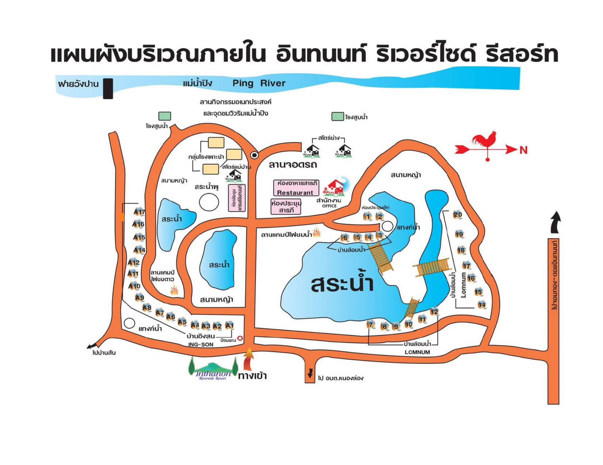

แผนที่ผังบริเวณ อินทนนท์ ริเวอร์ไซด์ รีสอร์ท
อ.เวียงหนองล่อง จ.ลำพูน — บ้านพักแบ่งเป็น 2 โซนหลัก: บ้านล้อมน้ำ (Lomnum) รอบสระน้ำ และบ้านอิงสน (Ing-Son) ใกล้ทางเข้า

จุดสำคัญในรีสอร์ท
อาหารทุกมื้อ
ห้องอาหารสารภี (Restaurant)
ห้องประชุมหลัก
ห้องแกรนด์อินทนนท์ / ห้องประชุมสารภี
สำนักงาน
Office (ใกล้ห้องอาหาร)
ลานกิจกรรม
ลานแคมป์ไฟชมน้ำ / ลานแคมป์ไฟชมดาว
ทางเข้า
ทางทิศใต้ (ป้อมยาม) — ไป อบต.หนองล่อง
ใกล้แม่น้ำ
แม่น้ำปิง / ฝายวังป่าน อยู่ทางทิศเหนือ
โซนบ้านพัก
บ้านล้อมน้ำ (Lomnum) — รอบสระน้ำกลางรีสอร์ท
มีหลังที่ 1–20 เรียงรอบสระน้ำ ใช้สำหรับนักเรียน ครู และพี่เลี้ยง ดูรายชื่อเข้าพัก
บ้านอิงสน (Ing-Son) — A1 – A17 ใกล้ทางเข้า
ใช้สำหรับกรรมการ วิทยากร และครู